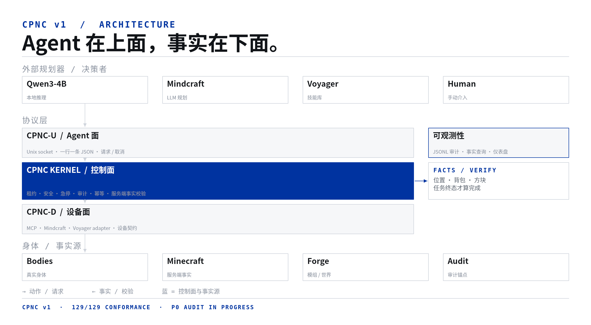
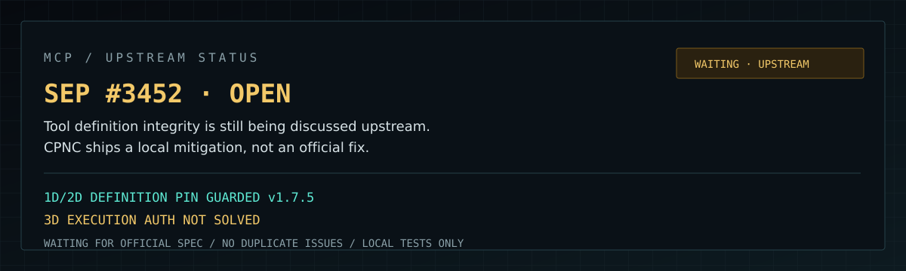
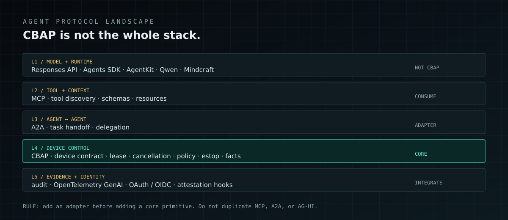
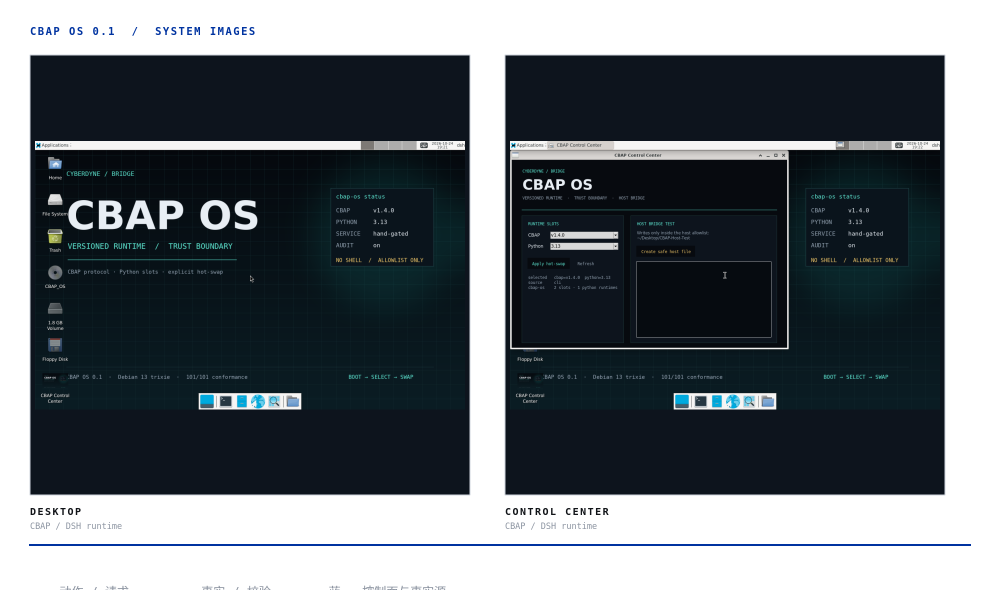

完成判据看事实
背包、坐标、方块、任务终态才算数。adapter 说成功、命令发出去了，都不算完成。
01 / WHAT IT IS
我们想验证的东西与 Minecraft 无关：一个 Agent 要在信息不完整、动作有代价、环境会变的世界里可靠地干活，需要什么样的接口与判据。Minecraft 只是低成本、可观测、可复现的沙盒。
背包、坐标、方块、任务终态才算数。adapter 说成功、命令发出去了，都不算完成。
同一设备同一时刻只有一个 writer；FIFO 等待、显式释放、每设备急停，不靠自觉。
主仓只依赖 driver 接口。Cyberdyne、MCP、Mindcraft、Voyager 各自是子仓，不写死进 Kernel。
02 / ARCHITECTURE
CBAP-U 面向 Agent；CBAP-D 面向设备；Kernel 在中间做租约、安全、取消和审计。完整结构以仓库中文架构图为准。

图例：细线 = 请求 / 状态；蓝 = 控制面与事实源；白底 = 本协议；灰 = 外部系统。
03 / PROTOCOL NOTES
这些判据来自真实的竞争、断线、急停和恢复。
不是 result.ok。服务端位置、背包、方块和任务终态才是完成判据。
租约按设备隔离；等待 FIFO；release、estop、cancel 是不同语义。
听不懂、拿不准、参数缺，就拒绝执行并留下原因，不静默吞掉。
动作有账；在途请求和重连不会乱重放；危险状态可以急停。
不同 Agent 只实现 adapter 和设备契约。主仓保持薄，身体和规划器各自演进。
04 / TRUST BOUNDARY
Agent 可以自主运行，但 Kernel 不相信它自带的安全声明。身份、租约、审计、MCP 子进程和 operator 动作各自有边界；失败默认关闭。
UDS 0600 + SO_PEERCRED；token 文件 0600、O_NOFOLLOW；per-agent uid/token；设备级 allowlist；普通 Agent 没有 estop/admin。
每设备单 writer、FIFO、TTL、fencing token；release / estop / cancel 语义分离；inflight、session 和 UID 速率限制。
JSONL seq + hash chain；checkpoint 检测尾部截断；可选 HMAC；远程 sink 可要求 seq/hash ack；审计失败进入安全态。
env allowlist、rlimits、进程组终止、输出上限；manifest HMAC（可强制）、tool/instruction pin；estop 必须有 safe-state 证据；可选独立 UID 与 bwrap/nsjail。
本地优先 Console；HttpOnly session、Host/Origin、CSP、登录限速；lease 释放、双人审批、SLA 通知、registry reload、显式 resume；远程 bind 必须 TLS，mTLS 可选。
同 UID/root、恶意 MCP facts、未认证的物理急停、TPM/HSM 和形式化验证仍是边界外；console mTLS 不等于 Kernel 端到端 mTLS。
approvals.ops 才拦高风险动作。estop 不需要审批；resume 是故障后 operator 的人工确认。
读完整安全边界 ↗
MCP / UPSTREAM STATUS
SEP #3452 仍在讨论工具定义完整性；CBAP v1.7.5 加了完整 JCS pin 和同连接 drift 校验，但这不是 MCP 官方修复，也不代表 3D 执行授权已经解决。

讨论 definition / instructions / scope 完整性，还没有最终规范。CBAP 不把 issue 里的讨论说成官方结论。
完整 tool object、serverInfo、instructions、RFC 8785 JCS；旧 pin fail closed；动作前重新检查 tools/list。
digest 能防“菜单被换”，不能证明 remote server 按菜单做菜。facts、批准 UI、attestation 和 sandbox 仍是边界。
PROTOCOL / LONG-TERM
模型调用、工具发现、Agent 间任务、UI 渲染都有各自的标准。CBAP 只守住设备控制、授权、事实和证据这一层；其他层先做 adapter，不复制。

CBAP 的核心：device contract、lease、cancel、estop、policy、facts、audit。其他层不塞进 Kernel。
MCP 做工具发现，A2A 做 Agent 间任务，OpenAI Responses / Agents SDK 做模型调用；CBAP 通过 adapter 接，不重写。
H1 钉边界和互操作；H2 做 async / signed envelope / OTel；H3 做 attestation hook、多租户和 certification。
05 / CBAP OS
CBAP OS 0.1 是 DSH OS 底座上的 CBAP 运行时层：GRUB 选 CBAP/Python 版本，Control Center 显示当前槽并热切换，Host Bridge 用 CBAP 协议访问宿主机 allowlist。
GRUB 每个已安装的 CBAP 槽一项；内核参数携带 cbap.cbap= 和 cbap.python=，Kernel 挂载对应版本。
本地 Tk 面板显示当前 CBAP/Python、版本槽和热切换入口；不把 root shell 暴露给 Agent。
host://fs、host://display、host://input/mouse、host://input/keyboard 和兼容的 host://desktop；输入默认关闭。

06 / CURRENT STATE
CBAP 控制面已通过 129 项 conformance；P0–P6 设备平权契约、默认拒绝、逐设备配额、trust facts、safe_state 和 Wayland portal 已落地。Alice 的 Forge bridge 源码保留，但未编译、未跑真实服务端，所以不算活跃子仓。
主仓 / 子仓边界
旧版脑 / 手、车厢、老祖思维和 M1–M7b 里程碑已经从主 README 移到 Cyberdyne 子链档案。主仓现在描述协议，不再把旧实验细节堆在首页。
当前状态
不把源码当成已验证。
07 / AGENT SUBREPOS
每个子仓拥有自己的 adapter、device / mapping、工具和 smoke test。主仓只负责接口与 conformance。
旧脑保留，默认经 bridge_cbap.py 走 CBAP；root 直连 shim 已移除，旧源码冻结归档。
真实 MCP body。公开 MCP tools → CBAP read / write / poll / estop，MCPDriver 走 stdio JSON-RPC。
Mindy 自带规划器。CBAP 观察状态、投递 prompt、停止；不冒充低层动作驱动。
只接 Mineflayer bridge：state / exec / forward / say / stop。1.21.1 真实 bridge 8/8；本地 Qwen 自治循环 3/3；上游 Voyager agents + CBAP 三任务 3/3。
Forge 1.20.1 最小 bridge 源码。未编译、未跑真实服务器，不假装是活跃子仓。
协议桥开销亚毫秒。真正慢的是 Minecraft 动作、Agent 规划和 LLM。
DETAILS / SOURCE / EVIDENCE
本站只是门面：不镜像文档，不接本地服务，不放运行数据。